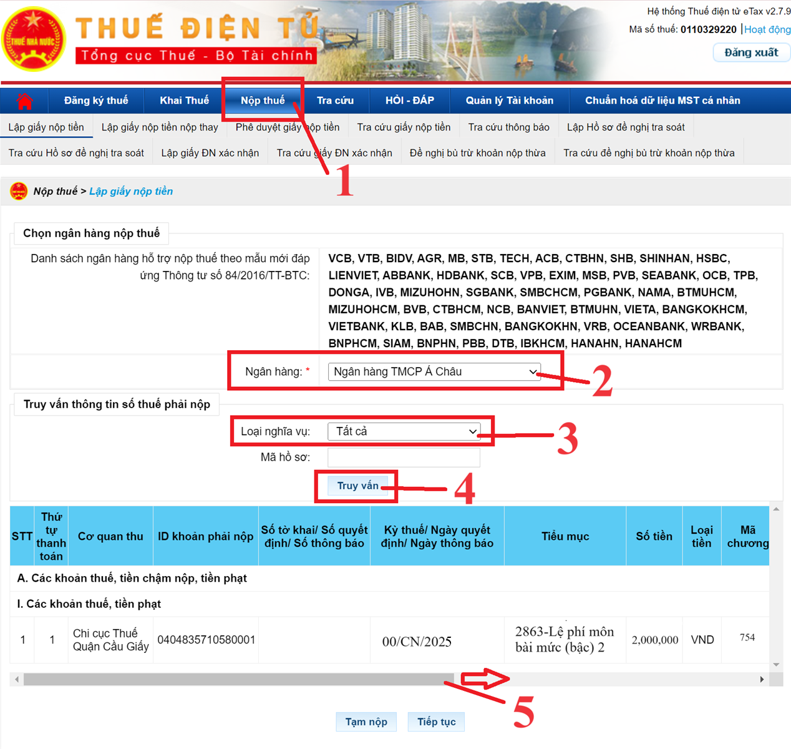
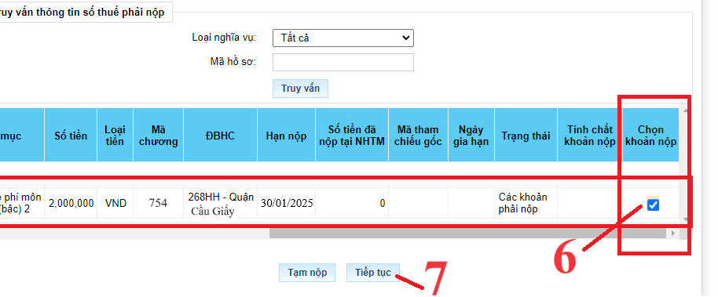
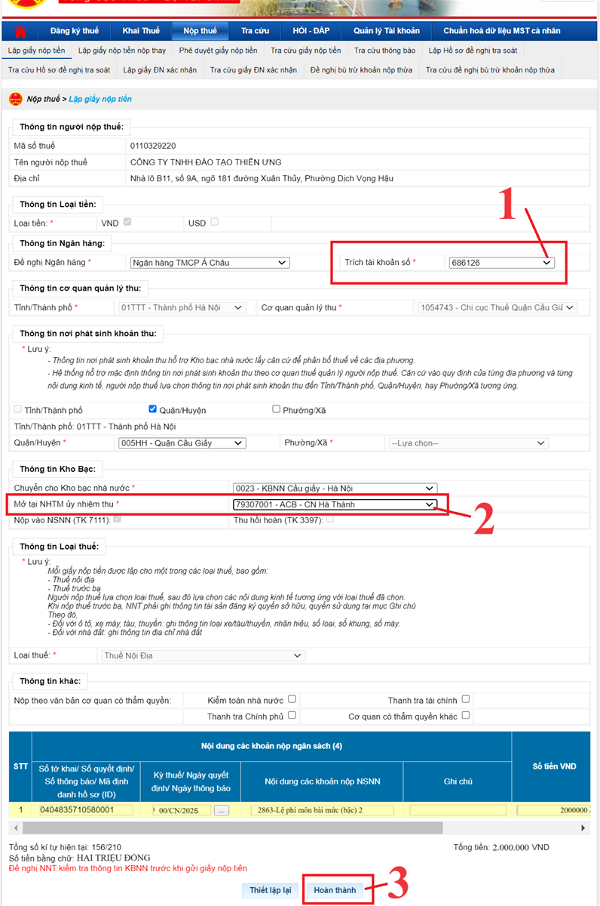
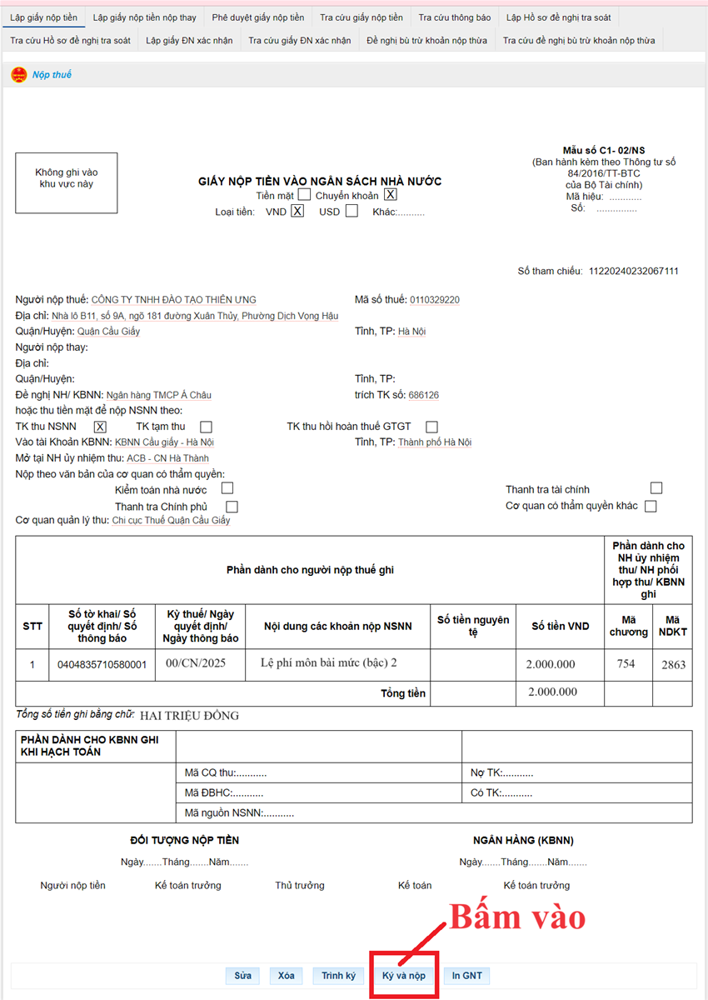
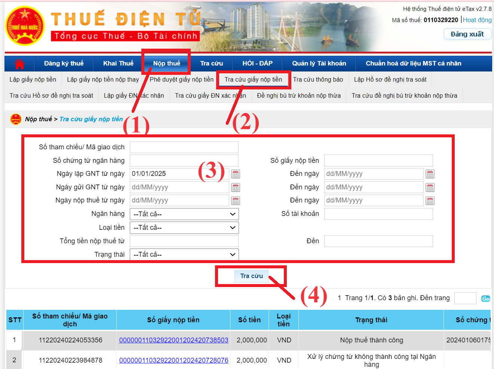

Hiện nay, hệ thống thuedientu đã cho phép doanh nghiệp thực hiện nộp tiền lệ phí môn bài bằng mã định danh khoản phải nộp (ID). Trong bài viết này thì công ty Kế Toán Diệu Tâm sẽ hướng dẫn các bạn kế toán thực hiện nộp tiền thuế môn bài, lệ phí môn bài qua mạng trên trang thuedientu.gdt.gov.vn
Cách nộp thuế môn bài điện tử như sau:
Bước 1: Cắm chữ ký số (USB Token) vào máy tính
Bước 2: Truy cập vào website: https://thuedientu.gdt.gov.vn
Bước 3: Đăng nhập vào hệ thống thuế điện tử trên trang thuedientu.gdt.gov.vn
=> Tại phần Đăng nhập hệ thống thuế điện tử các bạn bấm vào "Doanh Nghiệp"
=> Sau đó bạn kéo thanh dọc lên banner của website sẽ có mục "Đăng Nhập" => các bạn bấm vào đó
=> Lúc này hệ thống yêu cầu các bạn nhập thông tin về "Tên đăng nhập" và "Mật khẩu" và Mã xác nhận
Cách xác định tài khoản đăng nhập như sau:
Đối với tên đăng nhập: Là MST hoặc MST-QL (Với MST là Mã số thuế của công ty các bạn)
Lưu ý với các bạn rằng: Bắt buộc phải đăng nhập bằng tài khoản có đuôi "-QL"
Nếu tên đăng nhập các bạn chỉ để nguyên là MST mà không có đuôi “-QL” thì khi đăng nhập vào trang thuedientu sẽ không có chức năng Nộp thuế. Các bạn chỉ nộp được tờ khai thuế thôi, không nộp được tiền thuế, không nộp được tờ khai đăng ký MST TNCN
Bước 4: Nộp thuế theo mã định danh khoản phải nộp (ID)
Sau khi đã đăng nhập được vào hệ thống thuế điện tử trên trang thuedientu.gdt.gov.vn rồi thì thực hiện như sau:

- Bấm vào ô chức năng “Nộp thuế”
- Bấm chọn ngân hàng thực hiện trích tiền để nộp thuế
- Chọn loại nghĩa vụ là “Tất cả”
- Bấm vào “Truy vấn”
- Kéo thang ngang sang bên phải

6. Bấm tích chọn vào cột “Chọn khoản nộp” của dòng Lệ phí môn bài phải nộp
7. Bấm vào tiếp tục để thực hiện lập giấy nộp tiền

Sau khi bấm vào “Hoàn thành” thì hệ thống thuedientu sẽ hiện thị ra giấy nộp tiền

- Bạn kiểm tra lại thông tin trên giấy nộp tiền => Rồi bấm vào ô “Ký và nộp” để ký điện tử giấy nộp tiền và nộp giấy nộp tiền qua mạng
Bước 5: Kiểm tra và tra cứu giấy nộp tiền
=> Kiểm tra xem đã nộp thuế thành công hay chưa?
Sau khi đã ký và nộp thành công giấy nộp tiền thuế điện tử thì hệ thống thuế điện tử của Tổng Cục Thuế sẽ gửi tự động cho doanh nghiệp 2 thông báo qua mail:
+ Mail 1: THÔNG BÁO V/v: Xác nhận nộp chứng từ nộp thuế điện tử
+ Mail 2: THÔNG BÁO V/v: Xác nhận trạng thái giao dịch nộp thuế điện tử
+ Mail 2: THÔNG BÁO V/v: Xác nhận trạng thái giao dịch nộp thuế điện tử
=> Tại mail thứ 2 này thì các bạn cần kiểm tra tại dòng Trạng thái xem đã nộp thành công hay chưa
(Trường hợp trạng thái là không thành công thì hãy tìm nguyên nhân rồi thực hiện lập lại giấy nộp tiền để nộp lại)
=> Tra cứu giấy nộp tiền đã lập trên trang thuedientu:

Công ty đào tạo Kế Toán Diệu Tâm mời các bạn tham khảo thêm bài viết: